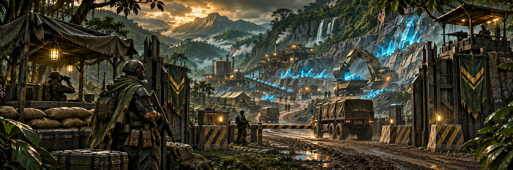

Set the roster
Matchmaking combines alliance groups of up to 200 survivors into four camps. The two strongest alliances in each state enter roster lock first. Organise membership before the lock.
Season guide
Matchmaking combines alliance groups of up to 200 survivors into four camps. The two strongest alliances in each state enter roster lock first. Organise membership before the lock.
Start at a Level 1 Camp Outpost if your camp has no territory. East and West open first, followed by North and South. Secure connecting Outposts and Passes to reach the centre.
The client lists the first battle on Thursday at 12:00 server time, lasting one hour and repeating every seven days. Check your event screen for the live window.
Mining Site and Pass ownership locks. The Ark Blockade Zone offers priority access toward the Forbidden Zone where the final Core contest takes place.
Before the season
Season matchmaking groups alliances, with up to 200 survivors in each pre-group. Several alliances from one state can be grouped together. Four camps are then matched by overall strength, so their numbers of groups may differ. The system can also assign unaffiliated players.
The two strongest alliances in a state enter roster lock first in the client rules. Players in a locked alliance cannot join or leave it during the lock. The client also says alliances created after matchmaking cannot enter the season map. Confirm eligibility and finish roster changes before your state’s lock.
East and West open first, with camps initially facing off in pairs. North and South open later and add invasion routes. Connected Outposts and Passes open access toward the Ark Blockade Zone, which surrounds the Forbidden Zone and the Ark Core.
Weeks 1–9

A camp with no territory starts at a Level 1 Outpost in its own Camp Base. After that, challenge connected targets. Leaders and R4s issue challenge plans during designated windows, using a separate pool from Mining Site and Pass declarations.
At neutral Outposts, both NPC guard defeats and durability damage earn Merits. The guards and durability regenerate, so concentrate attacks. A first capture triggers a two-minute truce. At an owned Outpost, only durability damage earns Merits. If several alliances contest it, the alliance with the most Merits wins when durability reaches zero. A newly captured owned Outpost stays protected until the next invasion period.
Passes open in phases. Once a Pass opens, eligibility still depends on territory access and available war declarations. The controlling camp gets passage permission. After declaring on a Pass, eligible players can teleport into its associated territory to stage for the fight. Captured Passes also produce crystals.
Sunday windows may let you challenge enemy-camp targets beyond normal borders. Same-camp holdings remain protected from friendly challenges. Advanced Teleporters can enter eligible allied territory, and some events have direct travel to Guilds, Camp HQ or the Ark Core. Check the live rules before committing teleports or troops.
Season economy
Mining Sites and Passes generate crystals for the camp. Higher-level mines produce more. Outposts help you reach these objectives. Track each holding’s level, capture date and expected payout so leadership can prioritise the sites that matter before settlement.
The client uses this weekly settlement point. Newly captured Level 2 and 3 Mining Sites gain the Abundant Effect for their first two outputs. Exact rates and boost percentages are unresolved. Once you have in-game values, enter them in the weekly crystal calculator.
Timed events and endgame
The first opening is configured for Week 3, Thursday at 12:00 server time. The window lasts one hour and repeats every seven days. It runs alongside territory play. Plan a separate rally and reinforcement roster for this cross-state contest and verify event entry, capture rules and rewards in game.
Mining Sites and Passes keep their owners when the final week starts. The first camp to secure the Ark Blockade Zone gets priority access toward the Forbidden Zone, where the Ark Core contest takes place. Decide which holdings to secure before the lock and organise a separate crew for the Core. Camp ranking, alliance contribution and personal performance are referenced for season rewards. Exact prizes and scoring remain unresolved.
Season progression
Client references cover map targets, marching, troop rotation and durability refresh. This suggests some encounters may use a durability mechanic. Spawn windows, required formations, attempts, difficulty and rewards still need in-game confirmation.
Rescue has separate world objects, troop handling and a dedicated chat-share format. The data suggests that players may be able to share an encounter location. The objective, schedule and reward rules remain open.
Dino Scales are used to upgrade the Antiviral Spore. Research references include production and storage improvements plus a 20-level cap increase. Source quantities, costs and the production curve are still missing. The Dino Hunting Turret appears by name, with its combat behaviour and costs unresolved.
The client references a revised Relic Skill system and an invasion effect that can increase troop fatalities in applicable fights. Confirm which effects are active before changing Relic Skills or committing to an invasion. Exact values, costs and reset rules are unresolved.
Client findings
Four layouts were recovered. One is 12 × 12 and three are 24 × 24, with 24 colour types and conveyor and waiting capacities of five. The public name, unlock schedule, rules and rewards are unknown.
Client records cover Base and March DNA, cosmetic variants, and several weighted draw options. The supplied guide found no direct link to Dinosaur Era. The draw currency and live availability need confirmation.
The v474 research did not establish a launch date, final matchmaking groups, State 415’s opponents, or camp assignments. Historical state brackets are useful background. Use live matchmaking and server announcements to plan against specific opponents.
GIR preparation
Source: ATLANTISHUB Research Studio, Dinosaur Era v474 field guide, pp. 1–24. ATLANTISHUB